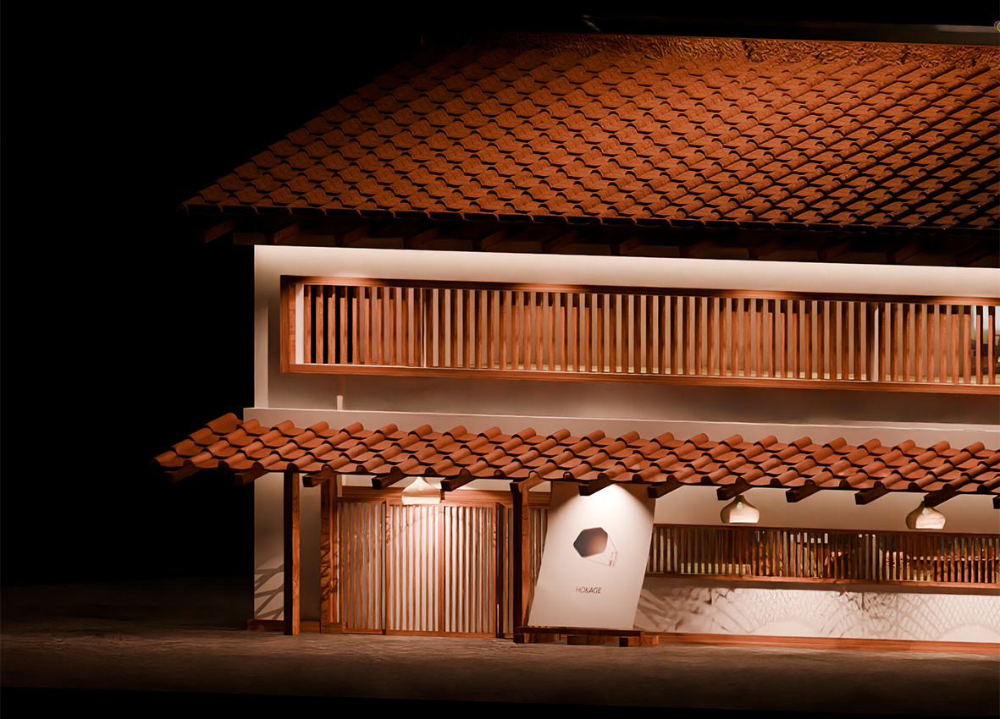
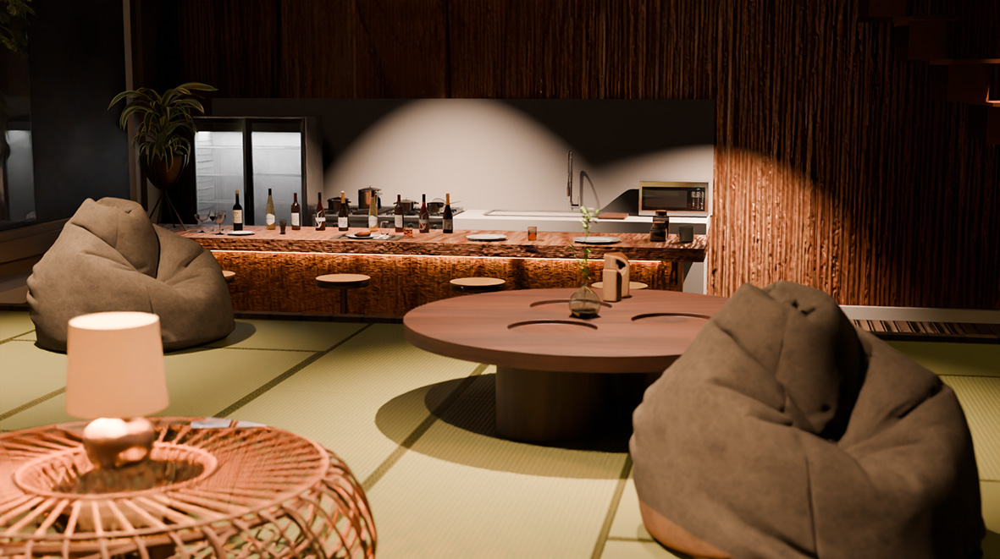
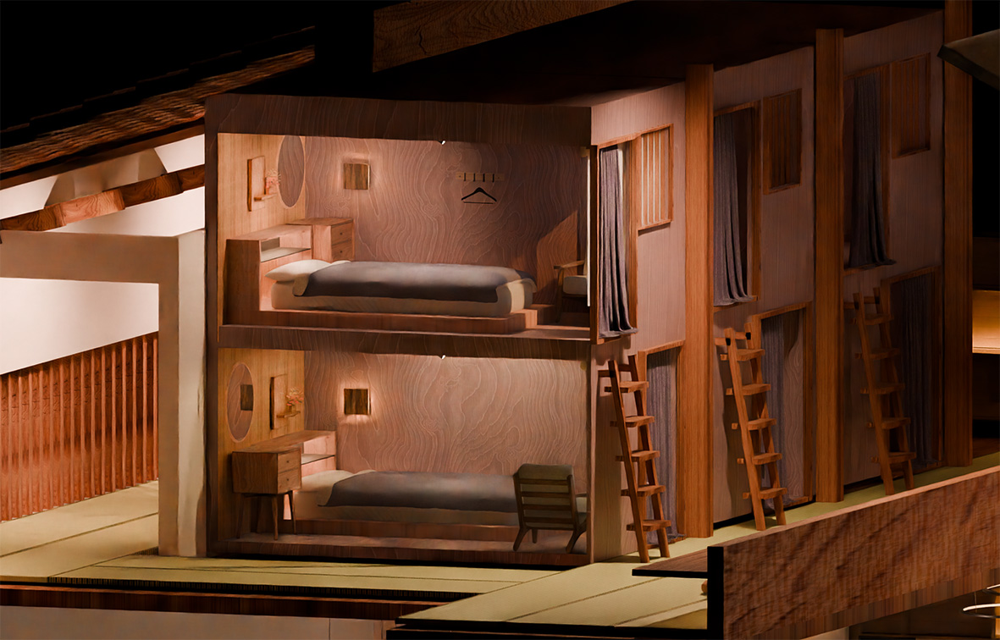
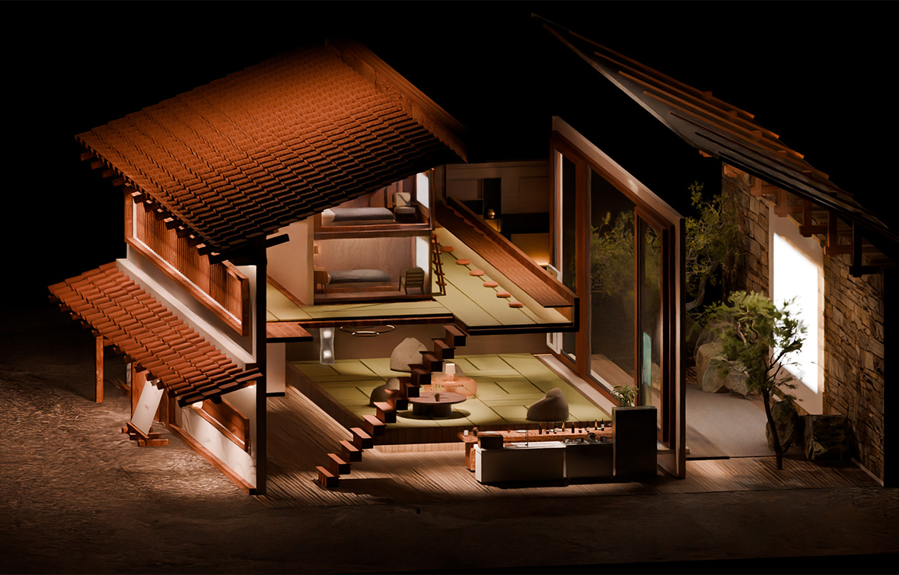
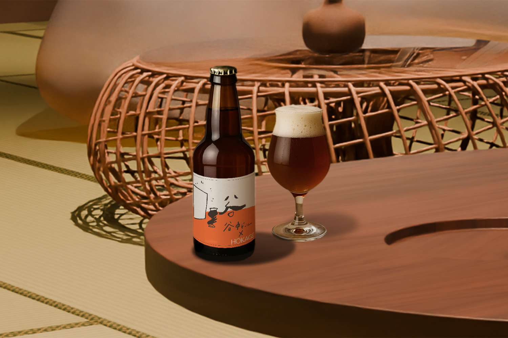
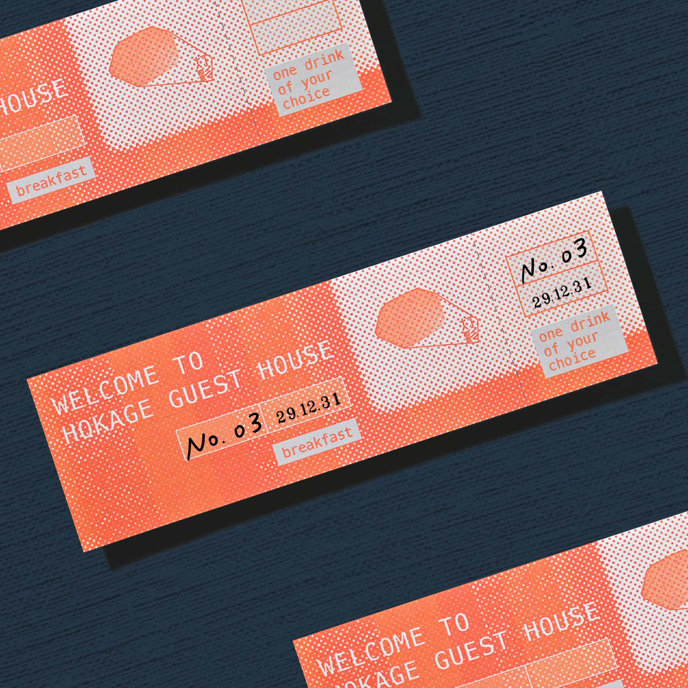
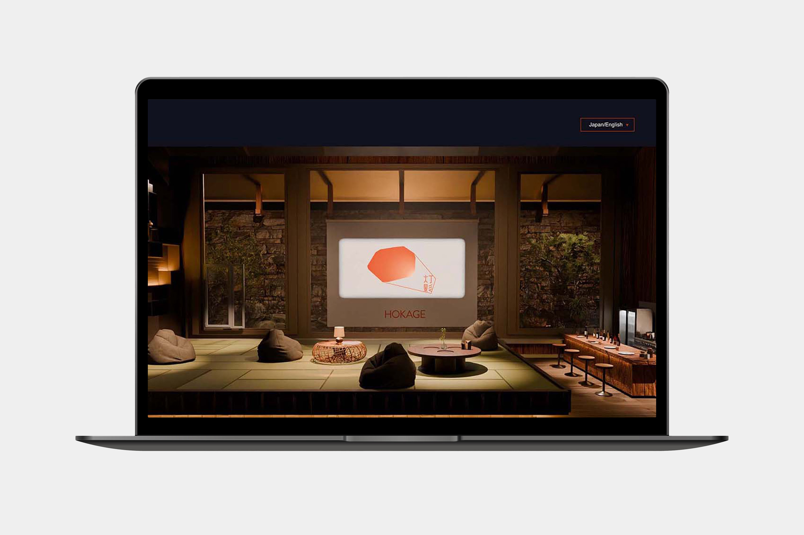
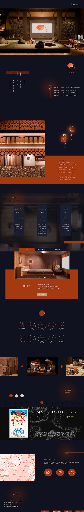

東京・谷中にある古民家をリノベーションしたゲストハウス「灯影-HOKAGE-」のブランディングを行いました。「灯影-HOKAGE-」はくつろぎながら映画を観ることができるゲストハウスです。映画を観る共用スペースにはバーが付いており、お酒を飲んだり、軽食を食べながら、談笑しつつ映画を観ることができます。谷中は東京の中心でありながら、昭和以前の下町情緒が色濃く残る場所です。また、上野は美術館が多くアートの集まる街でもあります。そういった街の特徴を活かして、「古民家×映画」をこのゲストハウスの強みとして、ブランディングを行いました。
※グループワーク